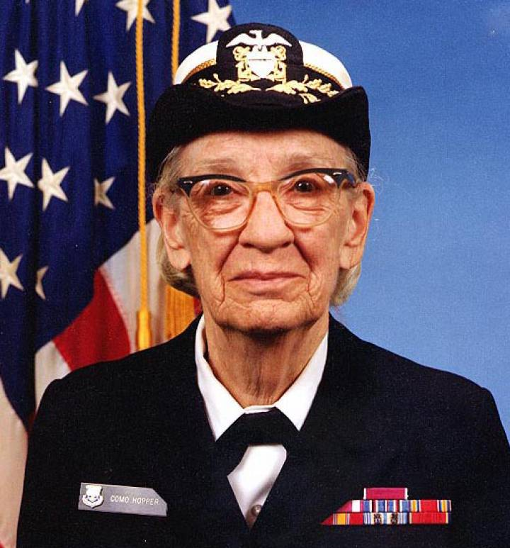

Amazing Grace

Grace Murray-Hopper (1906 — 1993) foi pioneira na computação e oficial da Marinha dos Estados Unidos nas décadas de 1940 e 1950, tornando contra-almirante posteriormente. Criou uma linguagem de programação, a Flow-Matic, que serviu como base para a criação do COBOL, sendo a primeira linguagem de programação de computadores a se aproximar da linguagem humana ao invés da linguagem de máquina.